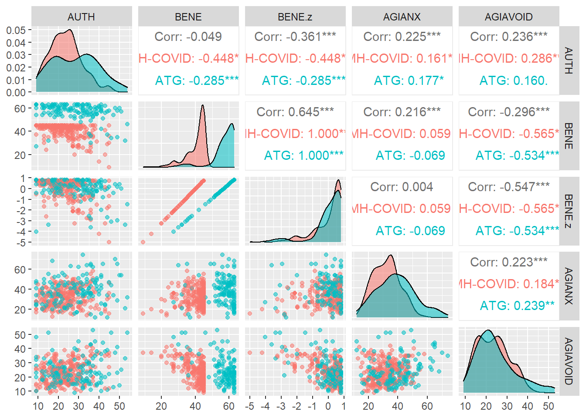
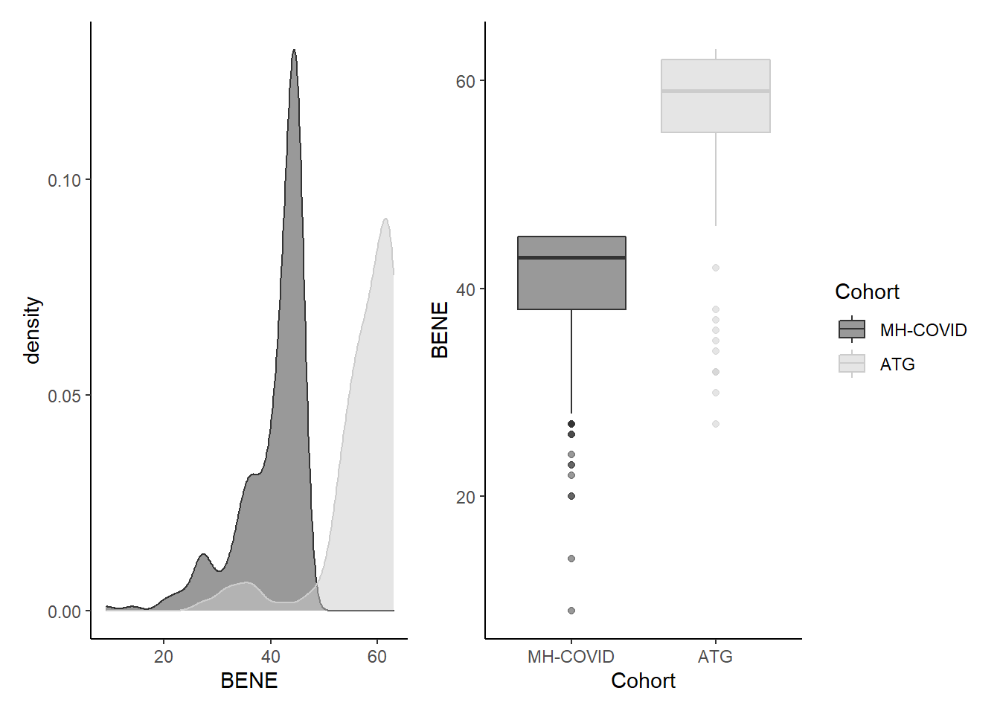
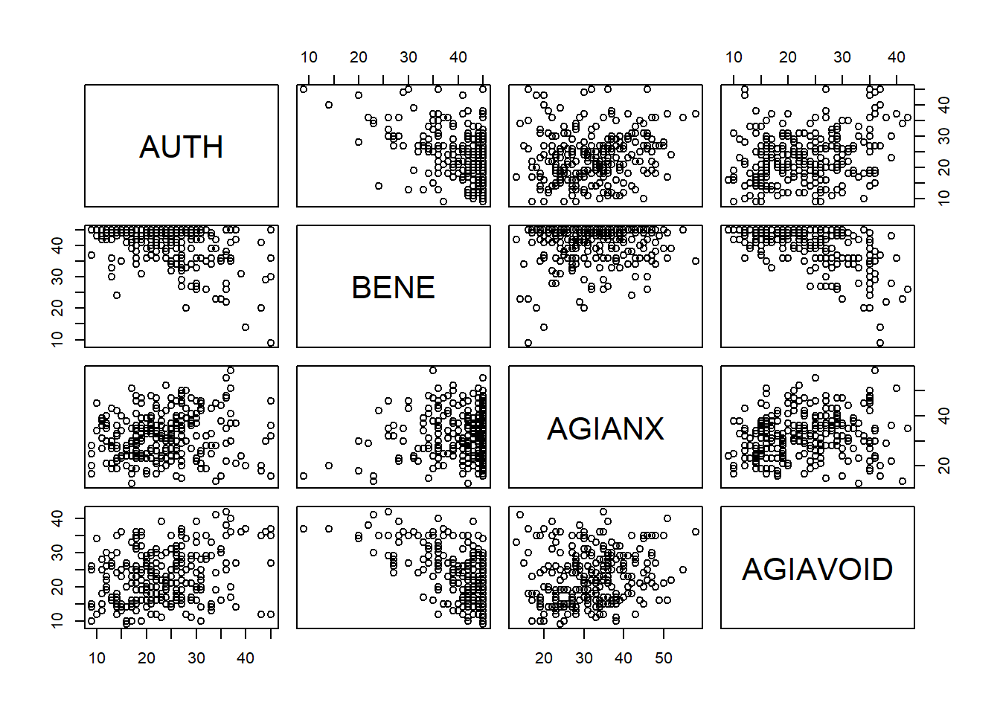
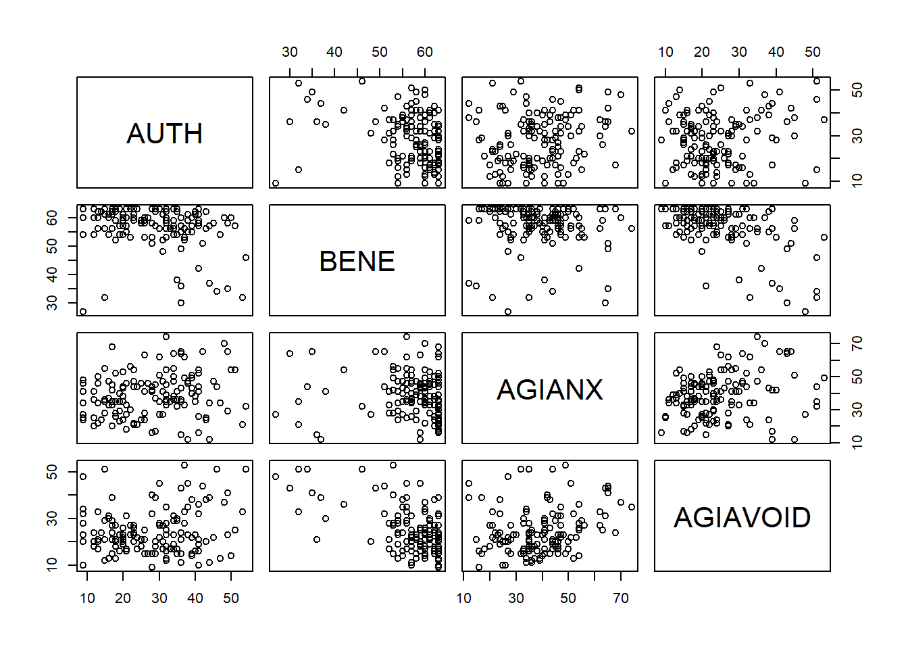
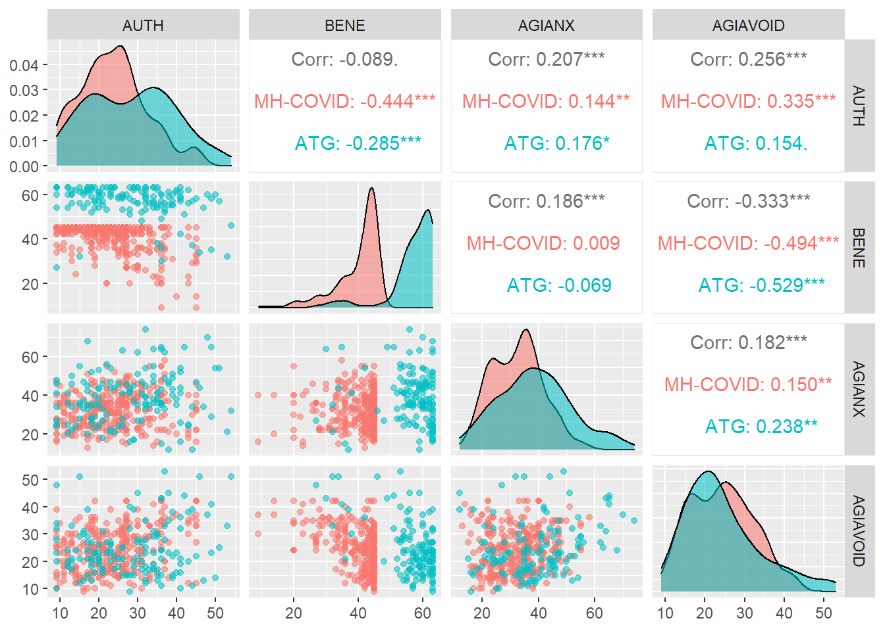

Research Question 1
Correlations among RTG and ATG
R. Noah Padgett
2021-08-13
Last updated: 2021-08-16
Checks: 6 1
Knit directory: religiousity-covid-study/
This reproducible R Markdown analysis was created with workflowr (version 1.6.2). The Checks tab describes the reproducibility checks that were applied when the results were created. The Past versions tab lists the development history.
The R Markdown is untracked by Git. To know which version of the R Markdown file created these results, you’ll want to first commit it to the Git repo. If you’re still working on the analysis, you can ignore this warning. When you’re finished, you can run wflow_publish to commit the R Markdown file and build the HTML.
Great job! The global environment was empty. Objects defined in the global environment can affect the analysis in your R Markdown file in unknown ways. For reproduciblity it’s best to always run the code in an empty environment.
The command set.seed(20210724) was run prior to running the code in the R Markdown file. Setting a seed ensures that any results that rely on randomness, e.g. subsampling or permutations, are reproducible.
Great job! Recording the operating system, R version, and package versions is critical for reproducibility.
Nice! There were no cached chunks for this analysis, so you can be confident that you successfully produced the results during this run.
Great job! Using relative paths to the files within your workflowr project makes it easier to run your code on other machines.
Great! You are using Git for version control. Tracking code development and connecting the code version to the results is critical for reproducibility.
The results in this page were generated with repository version a368c61. See the Past versions tab to see a history of the changes made to the R Markdown and HTML files.
Note that you need to be careful to ensure that all relevant files for the analysis have been committed to Git prior to generating the results (you can use wflow_publish or wflow_git_commit). workflowr only checks the R Markdown file, but you know if there are other scripts or data files that it depends on. Below is the status of the Git repository when the results were generated:
Ignored files:
Ignored: .Rhistory
Ignored: .Rproj.user/
Ignored: data/Boccia et al - Attachment to God Style Relates to Religiosity Measures.docx
Ignored: data/COVID19 Mental Health Data_forNoah.xlsx
Ignored: data/LGedits_Attachment to God Style Relates to Religiosity Measures endnote[29].docx
Ignored: data/MH & COVID updated.xlsx
Ignored: data/Methods.docx
Ignored: data/Rates of anxiety and depression in college students before and during the pandemic.docx
Ignored: data/Religiousity_Covid_Data_2021_07_24.csv
Ignored: data/Research Questions.txt
Ignored: data/imp_dat.RData
Untracked files:
Untracked: analysis/R0_Summary_Table.Rmd
Untracked: analysis/R1_correlations.Rmd
Untracked: analysis/R2_HADS.Rmd
Untracked: analysis/R3_atg_mental_health.Rmd
Untracked: analysis/R4.Rmd
Untracked: analysis/R5.Rmd
Untracked: analysis/data_summary_and_imputation.Rmd
Untracked: code/load_packages.R
Untracked: code/utility_functions.R
Untracked: manuscript/
Unstaged changes:
Modified: .gitignore
Modified: analysis/index.Rmd
Note that any generated files, e.g. HTML, png, CSS, etc., are not included in this status report because it is ok for generated content to have uncommitted changes.
There are no past versions. Publish this analysis with wflow_publish() to start tracking its development.
Research Question 1:
Does authoritarian vs benevolent relationship with God correlate with attachment to God style in cohort 1 and 2?Read in data
# Load imputed data
load("data/imp_dat.RData")
imp_dat_c1 <- imputation[[1]]
imp_dat_c2 <- imputation[[2]]
imp_dat_mids <- rbind(imp_dat_c1, imp_dat_c2)
mydata <- readxl::read_xlsx("data/MH & COVID updated.xlsx")
mydata <- mydata[,colnames(mydata) != "filter_$"]
# recoding to correct for errors
# recode all 0's for AUTH or BENE as NA
mydata$AUTH[mydata$AUTH == 0] <- NA
mydata$BENE[mydata$BENE == 0] <- NA
mydata <- mydata %>%
group_by(COHORT) %>%
mutate(
BENE.z = (BENE - mean(BENE, na.rm=T))/(sd(BENE, na.rm=T))
)
myVar <- c("COHORT","COVID", "AUTH", "BENE","BENE.z", "AGIANX", "AGIAVOID", "DEPR", "DEPR_DIAG", "ANX", "ANX_DIAG", "AGI_SECURITY")
subdat <- mydata %>%
dplyr::select(ID, COHORT, COVID, AUTH, BENE, BENE.z, AGIANX, AGIAVOID, DEPR, DEPR_DIAG, ANX, ANX_DIAG, AGI_SECURITY)
subdat$flag = 0
i <- 1
for(i in 1:nrow(subdat)){
subdat$flag[i] = anyNA(subdat[i,-c(1:3)])
}
subdat <- subdat %>%
filter(flag == 0)
subdat$Cohort = factor(subdat$COHORT, levels=1:2, labels=c("MH-COVID", "ATG"))Approach 1 - Listwise Deletion
Missing data are listwise deleted - using all cases with complete data on all variables of interest.
GGally::ggpairs(
subdat, columns = c(4:8),
mapping = ggplot2::aes(colour=Cohort, alpha=0.75))
p1 <- ggplot(subdat, aes(x=BENE, color=Cohort, fill=Cohort))+
geom_density(alpha=0.5) +
scale_color_grey()+
scale_fill_grey()+
theme_classic()+theme(legend.position = "none")
p2 <- ggplot(subdat, aes(x=Cohort, y=BENE, color=Cohort, fill=Cohort))+
geom_boxplot(alpha=0.5) +
scale_color_grey()+
scale_fill_grey()+
theme_classic()
p <- p1 + p2
p
Cohort 1: MH-COVID
# Cohort 1
pairs(~AUTH + BENE + AGIANX + AGIAVOID, data=filter(subdat, COHORT==1))
# Authoritarian
cor.test(~AUTH + AGIANX, data=filter(subdat, COHORT==1))
Pearson's product-moment correlation
data: AUTH and AGIANX
t = 3, df = 263, p-value = 0.009
alternative hypothesis: true correlation is not equal to 0
95 percent confidence interval:
0.0409 0.2758
sample estimates:
cor
0.161 cor.test(~AUTH + AGIAVOID, data=filter(subdat, COHORT==1))
Pearson's product-moment correlation
data: AUTH and AGIAVOID
t = 5, df = 263, p-value = 2e-06
alternative hypothesis: true correlation is not equal to 0
95 percent confidence interval:
0.171 0.393
sample estimates:
cor
0.286 # Benevelant
cor.test(~BENE + AGIANX, data=filter(subdat, COHORT==1))
Pearson's product-moment correlation
data: BENE and AGIANX
t = 1, df = 263, p-value = 0.3
alternative hypothesis: true correlation is not equal to 0
95 percent confidence interval:
-0.0618 0.1784
sample estimates:
cor
0.0591 cor.test(~BENE + AGIAVOID, data=filter(subdat, COHORT==1))
Pearson's product-moment correlation
data: BENE and AGIAVOID
t = -11, df = 263, p-value <2e-16
alternative hypothesis: true correlation is not equal to 0
95 percent confidence interval:
-0.642 -0.477
sample estimates:
cor
-0.565 Cohort 2: ATG
# Cohort 2
pairs(~AUTH + BENE + AGIANX + AGIAVOID, data=filter(subdat, COHORT==2))
# Authoritarian
cor.test(~AUTH + AGIANX, data=filter(subdat, COHORT==2))
Pearson's product-moment correlation
data: AUTH and AGIANX
t = 2, df = 136, p-value = 0.04
alternative hypothesis: true correlation is not equal to 0
95 percent confidence interval:
0.00974 0.33382
sample estimates:
cor
0.177 cor.test(~AUTH + AGIAVOID, data=filter(subdat, COHORT==2))
Pearson's product-moment correlation
data: AUTH and AGIAVOID
t = 2, df = 136, p-value = 0.06
alternative hypothesis: true correlation is not equal to 0
95 percent confidence interval:
-0.00701 0.31885
sample estimates:
cor
0.16 # Benevelant
cor.test(~BENE + AGIANX, data=filter(subdat, COHORT==2))
Pearson's product-moment correlation
data: BENE and AGIANX
t = -0.8, df = 136, p-value = 0.4
alternative hypothesis: true correlation is not equal to 0
95 percent confidence interval:
-0.2338 0.0989
sample estimates:
cor
-0.0694 cor.test(~BENE + AGIAVOID, data=filter(subdat, COHORT==2))
Pearson's product-moment correlation
data: BENE and AGIAVOID
t = -7, df = 136, p-value = 1e-11
alternative hypothesis: true correlation is not equal to 0
95 percent confidence interval:
-0.644 -0.403
sample estimates:
cor
-0.534 Approach 2 - Single Complete Imputation
A single complete dataset is used
GGally::ggpairs(
imp_dat, columns = c("AUTH", "BENE", "AGIANX", "AGIAVOID"),
mapping = ggplot2::aes(colour=Cohort, alpha=0.75))
p1 <- ggplot(subdat, aes(x=BENE, color=Cohort, fill=Cohort))+
geom_density(alpha=0.5) +
scale_color_grey()+
scale_fill_grey()+
theme_classic()+theme(legend.position = "none")
p2 <- ggplot(subdat, aes(x=Cohort, y=BENE, color=Cohort, fill=Cohort))+
geom_boxplot(alpha=0.5) +
scale_color_grey()+
scale_fill_grey()+
theme_classic()
p <- p1 + p2
p
Cohort 1
# Authoritarian
cor.test(~AUTH + AGIANX, data=filter(imp_dat, COHORT==1))
Pearson's product-moment correlation
data: AUTH and AGIANX
t = 3, df = 317, p-value = 0.01
alternative hypothesis: true correlation is not equal to 0
95 percent confidence interval:
0.0348 0.2500
sample estimates:
cor
0.144 cor.test(~AUTH + AGIAVOID, data=filter(imp_dat, COHORT==1))
Pearson's product-moment correlation
data: AUTH and AGIAVOID
t = 6, df = 317, p-value = 9e-10
alternative hypothesis: true correlation is not equal to 0
95 percent confidence interval:
0.233 0.429
sample estimates:
cor
0.335 # Benevelant
cor.test(~BENE + AGIANX, data=filter(imp_dat, COHORT==1))
Pearson's product-moment correlation
data: BENE and AGIANX
t = 0.2, df = 317, p-value = 0.9
alternative hypothesis: true correlation is not equal to 0
95 percent confidence interval:
-0.101 0.118
sample estimates:
cor
0.00867 cor.test(~BENE + AGIAVOID, data=filter(imp_dat, COHORT==1))
Pearson's product-moment correlation
data: BENE and AGIAVOID
t = -10, df = 317, p-value <2e-16
alternative hypothesis: true correlation is not equal to 0
95 percent confidence interval:
-0.573 -0.406
sample estimates:
cor
-0.494 Cohort 2
# Authoritarian
cor.test(~AUTH + AGIANX, data=filter(imp_dat, COHORT==2))
Pearson's product-moment correlation
data: AUTH and AGIANX
t = 2, df = 137, p-value = 0.04
alternative hypothesis: true correlation is not equal to 0
95 percent confidence interval:
0.00986 0.33282
sample estimates:
cor
0.176 cor.test(~AUTH + AGIAVOID, data=filter(imp_dat, COHORT==2))
Pearson's product-moment correlation
data: AUTH and AGIAVOID
t = 2, df = 137, p-value = 0.07
alternative hypothesis: true correlation is not equal to 0
95 percent confidence interval:
-0.0129 0.3124
sample estimates:
cor
0.154 # Benevelant
cor.test(~BENE + AGIANX, data=filter(imp_dat, COHORT==2))
Pearson's product-moment correlation
data: BENE and AGIANX
t = -0.8, df = 137, p-value = 0.4
alternative hypothesis: true correlation is not equal to 0
95 percent confidence interval:
-0.2331 0.0984
sample estimates:
cor
-0.0693 cor.test(~BENE + AGIAVOID, data=filter(imp_dat, COHORT==2))
Pearson's product-moment correlation
data: BENE and AGIAVOID
t = -7, df = 137, p-value = 2e-11
alternative hypothesis: true correlation is not equal to 0
95 percent confidence interval:
-0.639 -0.398
sample estimates:
cor
-0.529 Approach 3 - Full Imputation Method
Cohort 1
c1 <- with(
imp_dat_c1,
lm(scale(AUTH)~ scale(AGIANX))
)
pool(c1)Class: mipo m = 5
term m estimate ubar b t dfcom df riv
1 (Intercept) 5 1.67e-17 0.00310 8.43e-32 0.00310 317 315.0 3.27e-29
2 scale(AGIANX) 5 1.07e-01 0.00311 3.71e-03 0.00756 317 10.6 1.43e+00
lambda fmi
1 3.27e-29 0.00629
2 5.89e-01 0.64930summary(D1(c1))
Models:
model formula
1 scale(AUTH) ~ scale(AGIANX)
2 scale(AUTH) ~ 1
Comparisons:
test statistic df1 df2 dfcom p.value riv
1 ~~ 2 1.51 1 4 317 0.286 1.43
Number of imputations: 5 Method D1c1 <- with(
imp_dat_c1,
lm(scale(AUTH)~ scale(AGIAVOID))
)
pool(c1)Class: mipo m = 5
term m estimate ubar b t dfcom df riv
1 (Intercept) 5 4.69e-17 0.00270 6.97e-32 0.00270 317 315 3.09e-29
2 scale(AGIAVOID) 5 3.72e-01 0.00271 2.18e-03 0.00533 317 15 9.66e-01
lambda fmi
1 3.09e-29 0.00629
2 4.91e-01 0.54783summary(D1(c1))
Models:
model formula
1 scale(AUTH) ~ scale(AGIAVOID)
2 scale(AUTH) ~ 1
Comparisons:
test statistic df1 df2 dfcom p.value riv
1 ~~ 2 25.9 1 4 317 0.00704 0.966
Number of imputations: 5 Method D1# Benevelant
c1 <- with(
imp_dat_c1,
lm(scale(BENE)~ scale(AGIANX))
)
pool(c1)Class: mipo m = 5
term m estimate ubar b t dfcom df riv
1 (Intercept) 5 -4.54e-17 0.00312 1.67e-31 0.00312 317 314.99 6.43e-29
2 scale(AGIANX) 5 4.47e-02 0.00313 6.44e-03 0.01085 317 7.27 2.47e+00
lambda fmi
1 6.43e-29 0.00629
2 7.11e-01 0.76763summary(D1(c1))
Models:
model formula
1 scale(BENE) ~ scale(AGIANX)
2 scale(BENE) ~ 1
Comparisons:
test statistic df1 df2 dfcom p.value riv
1 ~~ 2 0.184 1 4 317 0.69 2.47
Number of imputations: 5 Method D1c1 <- with(
imp_dat_c1,
lm(scale(BENE)~ scale(AGIAVOID))
)
pool(c1)Class: mipo m = 5
term m estimate ubar b t dfcom df riv
1 (Intercept) 5 -6.92e-17 0.00221 2.57e-31 0.00221 317 314.99 1.40e-28
2 scale(AGIAVOID) 5 -5.44e-01 0.00221 2.86e-03 0.00564 317 9.96 1.55e+00
lambda fmi
1 1.40e-28 0.00629
2 6.08e-01 0.66835summary(D1(c1))
Models:
model formula
1 scale(BENE) ~ scale(AGIAVOID)
2 scale(BENE) ~ 1
Comparisons:
test statistic df1 df2 dfcom p.value riv
1 ~~ 2 52.5 1 4 317 0.00193 1.55
Number of imputations: 5 Method D1Cohort 2
c1 <- with(
imp_dat_c2,
lm(scale(AUTH)~ scale(AGIANX))
)
pool(c1)Class: mipo m = 5
term m estimate ubar b t dfcom df riv
1 (Intercept) 5 -1.89e-17 0.00702 1.45e-32 0.00702 137 135 2.48e-30
2 scale(AGIANX) 5 1.76e-01 0.00707 1.92e-07 0.00707 137 135 3.25e-05
lambda fmi
1 2.48e-30 0.0145
2 3.25e-05 0.0145summary(D1(c1))
Models:
model formula
1 scale(AUTH) ~ scale(AGIANX)
2 scale(AUTH) ~ 1
Comparisons:
test statistic df1 df2 dfcom p.value riv
1 ~~ 2 4.38 1 4 137 0.105 3.25e-05
Number of imputations: 5 Method D1c1 <- with(
imp_dat_c2,
lm(scale(AUTH)~ scale(AGIAVOID))
)
pool(c1)Class: mipo m = 5
term m estimate ubar b t dfcom df riv
1 (Intercept) 5 1.42e-17 0.00705 1.45e-32 0.00705 137 135 2.46e-30
2 scale(AGIAVOID) 5 1.66e-01 0.00710 5.79e-05 0.00717 137 133 9.79e-03
lambda fmi
1 2.46e-30 0.0145
2 9.69e-03 0.0242summary(D1(c1))
Models:
model formula
1 scale(AUTH) ~ scale(AGIAVOID)
2 scale(AUTH) ~ 1
Comparisons:
test statistic df1 df2 dfcom p.value riv
1 ~~ 2 3.84 1 4 137 0.122 0.00979
Number of imputations: 5 Method D1# Benevelant
c1 <- with(
imp_dat_c2,
lm(scale(BENE)~ scale(AGIANX))
)
pool(c1)Class: mipo m = 5
term m estimate ubar b t dfcom df riv
1 (Intercept) 5 5.54e-17 0.00721 1.05e-31 0.00721 137 135 1.74e-29
2 scale(AGIANX) 5 -6.95e-02 0.00726 1.44e-08 0.00726 137 135 2.39e-06
lambda fmi
1 1.74e-29 0.0145
2 2.39e-06 0.0145summary(D1(c1))
Models:
model formula
1 scale(BENE) ~ scale(AGIANX)
2 scale(BENE) ~ 1
Comparisons:
test statistic df1 df2 dfcom p.value riv
1 ~~ 2 0.664 1 4 137 0.461 2.39e-06
Number of imputations: 5 Method D1c1 <- with(
imp_dat_c2,
lm(scale(BENE)~ scale(AGIAVOID))
)
pool(c1)Class: mipo m = 5
term m estimate ubar b t dfcom df riv
1 (Intercept) 5 -7.25e-17 0.00518 1.05e-31 0.00518 137 135 2.43e-29
2 scale(AGIAVOID) 5 -5.34e-01 0.00521 1.03e-05 0.00523 137 135 2.37e-03
lambda fmi
1 2.43e-29 0.0145
2 2.37e-03 0.0169summary(D1(c1))
Models:
model formula
1 scale(BENE) ~ scale(AGIAVOID)
2 scale(BENE) ~ 1
Comparisons:
test statistic df1 df2 dfcom p.value riv
1 ~~ 2 54.6 1 4 137 0.00179 0.00237
Number of imputations: 5 Method D1Test Difference Between Cohorts
c0 <- with(imp_dat_mids, lm(scale(AUTH)~ scale(AGIANX)+I(COHORT == 1)))
c1 <- with(
imp_dat_mids,
lm(scale(AUTH)~ scale(AGIANX)*I(COHORT == 1))
)
pool(c1)Class: mipo m = 5
term m estimate ubar b t dfcom
1 (Intercept) 5 0.1951 0.00775 0.003143 0.01152 454
2 scale(AGIANX) 5 0.1687 0.00473 0.000033 0.00477 454
3 I(COHORT == 1)TRUE 5 -0.2911 0.01090 0.005261 0.01721 454
4 scale(AGIANX):I(COHORT == 1)TRUE 5 -0.0537 0.00911 0.004125 0.01406 454
df riv lambda fmi
1 33.3 0.48643 0.32725 0.3643
2 444.8 0.00838 0.00831 0.0127
3 26.9 0.57923 0.36678 0.4091
4 29.1 0.54320 0.35200 0.3924summary(D1(c1, c0))
Models:
model formula
1 scale(AUTH) ~ scale(AGIANX) * I(COHORT == 1)
2 scale(AUTH) ~ scale(AGIANX) + I(COHORT == 1)
Comparisons:
test statistic df1 df2 dfcom p.value riv
1 ~~ 2 0.205 1 4 454 0.674 0.543
Number of imputations: 5 Method D1c0 <- with(imp_dat_mids, lm(scale(AUTH)~ scale(AGIAVOID)+I(COHORT == 1)))
c1 <- with(
imp_dat_mids,
lm(scale(AUTH)~ scale(AGIAVOID)*I(COHORT == 1))
)
pool(c1)Class: mipo m = 5
term m estimate ubar b t dfcom
1 (Intercept) 5 0.266 0.00635 0.002882 0.00981 454
2 scale(AGIAVOID) 5 0.169 0.00494 0.000114 0.00508 454
3 I(COHORT == 1)TRUE 5 -0.381 0.00912 0.005964 0.01628 454
4 scale(AGIAVOID):I(COHORT == 1)TRUE 5 0.189 0.00811 0.003656 0.01250 454
df riv lambda fmi
1 29.0 0.5445 0.353 0.3930
2 407.3 0.0277 0.027 0.0317
3 19.1 0.7848 0.440 0.4903
4 29.2 0.5407 0.351 0.3912summary(D1(c1, c0))
Models:
model formula
1 scale(AUTH) ~ scale(AGIAVOID) * I(COHORT == 1)
2 scale(AUTH) ~ scale(AGIAVOID) + I(COHORT == 1)
Comparisons:
test statistic df1 df2 dfcom p.value riv
1 ~~ 2 2.87 1 4 454 0.165 0.541
Number of imputations: 5 Method D1# Benevelant
c0 <- with(imp_dat_mids, lm(scale(BENE.z)~ scale(AGIANX)+I(COHORT == 1)))
c1 <- with(
imp_dat_mids,
lm(scale(BENE.z)~ scale(AGIANX)*I(COHORT == 1))
)
pool(c1)Class: mipo m = 5
term m estimate ubar b t dfcom
1 (Intercept) 5 0.0559 0.00818 7.63e-03 0.01734 453
2 scale(AGIANX) 5 -0.0556 0.00496 1.81e-05 0.00498 453
3 I(COHORT == 1)TRUE 5 -0.0592 0.01147 1.37e-02 0.02795 453
4 scale(AGIANX):I(COHORT == 1)TRUE 5 0.1101 0.00955 4.38e-03 0.01480 453
df riv lambda fmi
1 13.4 1.12052 0.52842 0.58585
2 448.1 0.00439 0.00437 0.00879
3 10.8 1.43631 0.58954 0.64888
4 28.6 0.55053 0.35506 0.39587summary(D1(c1,c0))
Models:
model formula
1 scale(BENE.z) ~ scale(AGIANX) * I(COHORT == 1)
2 scale(BENE.z) ~ scale(AGIANX) + I(COHORT == 1)
Comparisons:
test statistic df1 df2 dfcom p.value riv
1 ~~ 2 0.819 1 4 453 0.417 0.551
Number of imputations: 5 Method D1c0 <- with(imp_dat_mids, lm(scale(BENE.z)~ scale(AGIAVOID)+I(COHORT == 1)))
c1 <- with(
imp_dat_mids,
lm(scale(BENE.z)~ scale(AGIAVOID)*I(COHORT == 1))
)
pool(c1)Class: mipo m = 5
term m estimate ubar b t dfcom
1 (Intercept) 5 0.0422 0.00531 0.00774 0.01460 453
2 scale(AGIAVOID) 5 -0.4572 0.00415 0.00131 0.00572 453
3 I(COHORT == 1)TRUE 5 -0.0589 0.00761 0.01600 0.02682 453
4 scale(AGIAVOID):I(COHORT == 1)TRUE 5 -0.0879 0.00678 0.02295 0.03432 453
df riv lambda fmi
1 9.32 1.748 0.636 0.695
2 45.51 0.379 0.275 0.305
3 7.35 2.524 0.716 0.771
4 5.81 4.061 0.802 0.847summary(D1(c1,c0))
Models:
model formula
1 scale(BENE.z) ~ scale(AGIAVOID) * I(COHORT == 1)
2 scale(BENE.z) ~ scale(AGIAVOID) + I(COHORT == 1)
Comparisons:
test statistic df1 df2 dfcom p.value riv
1 ~~ 2 0.225 1 4 453 0.66 4.06
Number of imputations: 5 Method D1
sessionInfo()R version 4.0.5 (2021-03-31)
Platform: x86_64-w64-mingw32/x64 (64-bit)
Running under: Windows 10 x64 (build 19042)
Matrix products: default
locale:
[1] LC_COLLATE=English_United States.1252
[2] LC_CTYPE=English_United States.1252
[3] LC_MONETARY=English_United States.1252
[4] LC_NUMERIC=C
[5] LC_TIME=English_United States.1252
attached base packages:
[1] stats graphics grDevices utils datasets methods base
other attached packages:
[1] mitools_2.4 mitml_0.4-1 naniar_0.6.0 miceadds_3.11-6
[5] mice_3.13.0 car_3.0-10 carData_3.0-4 patchwork_1.1.1
[9] psych_2.0.12 viridis_0.5.1 viridisLite_0.3.0 gridExtra_2.3
[13] xtable_1.8-4 kableExtra_1.3.4 GGally_2.1.1 MASS_7.3-53.1
[17] data.table_1.14.0 readxl_1.3.1 forcats_0.5.1 stringr_1.4.0
[21] dplyr_1.0.5 purrr_0.3.4 readr_1.4.0 tidyr_1.1.3
[25] tibble_3.1.0 ggplot2_3.3.3 tidyverse_1.3.0 workflowr_1.6.2
loaded via a namespace (and not attached):
[1] minqa_1.2.4 colorspace_2.0-0 ellipsis_0.3.1 rio_0.5.26
[5] visdat_0.5.3 rprojroot_2.0.2 fs_1.5.0 rstudioapi_0.13
[9] farver_2.1.0 fansi_0.4.2 lubridate_1.7.10 xml2_1.3.2
[13] splines_4.0.5 mnormt_2.0.2 knitr_1.31 jsonlite_1.7.2
[17] nloptr_1.2.2.2 broom_0.7.5 dbplyr_2.1.0 compiler_4.0.5
[21] httr_1.4.2 backports_1.2.1 assertthat_0.2.1 Matrix_1.3-2
[25] cli_2.3.1 later_1.1.0.1 htmltools_0.5.1.1 tools_4.0.5
[29] gtable_0.3.0 glue_1.4.2 Rcpp_1.0.7 cellranger_1.1.0
[33] jquerylib_0.1.3 vctrs_0.3.6 svglite_2.0.0 nlme_3.1-152
[37] xfun_0.21 ps_1.6.0 openxlsx_4.2.3 lme4_1.1-26
[41] rvest_1.0.0 lifecycle_1.0.0 statmod_1.4.35 pan_1.6
[45] scales_1.1.1 hms_1.0.0 promises_1.2.0.1 parallel_4.0.5
[49] RColorBrewer_1.1-2 yaml_2.2.1 curl_4.3 sass_0.3.1
[53] reshape_0.8.8 stringi_1.5.3 highr_0.8 boot_1.3-27
[57] zip_2.1.1 rlang_0.4.10 pkgconfig_2.0.3 systemfonts_1.0.1
[61] evaluate_0.14 lattice_0.20-41 labeling_0.4.2 tidyselect_1.1.0
[65] plyr_1.8.6 magrittr_2.0.1 R6_2.5.0 generics_0.1.0
[69] DBI_1.1.1 pillar_1.5.1 haven_2.3.1 foreign_0.8-81
[73] withr_2.4.1 survival_3.2-10 abind_1.4-5 modelr_0.1.8
[77] crayon_1.4.1 jomo_2.7-2 utf8_1.1.4 tmvnsim_1.0-2
[81] rmarkdown_2.7 grid_4.0.5 git2r_0.28.0 reprex_1.0.0
[85] digest_0.6.27 webshot_0.5.2 httpuv_1.5.5 munsell_0.5.0
[89] bslib_0.2.4